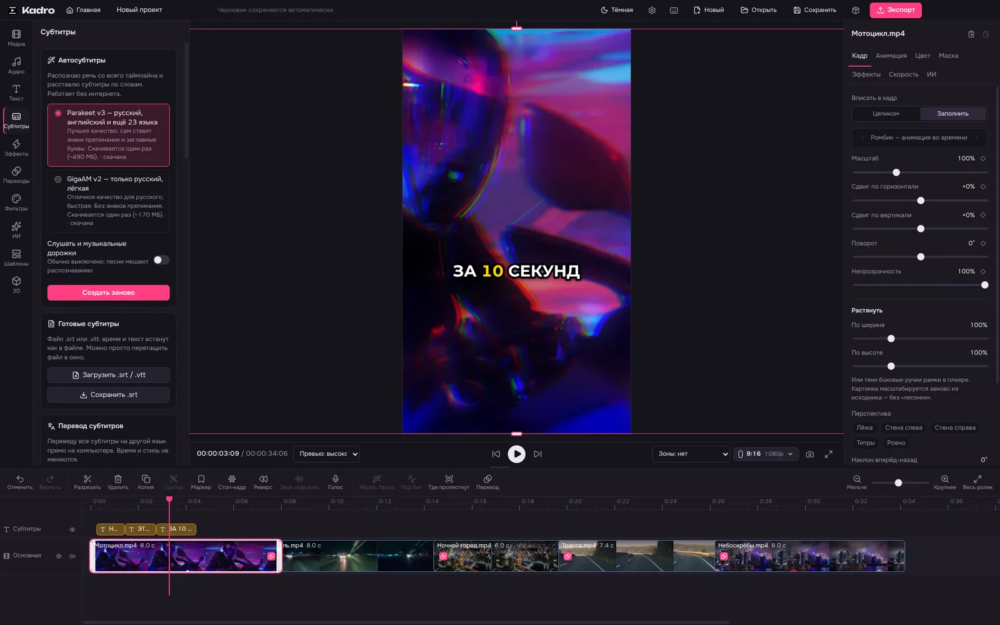
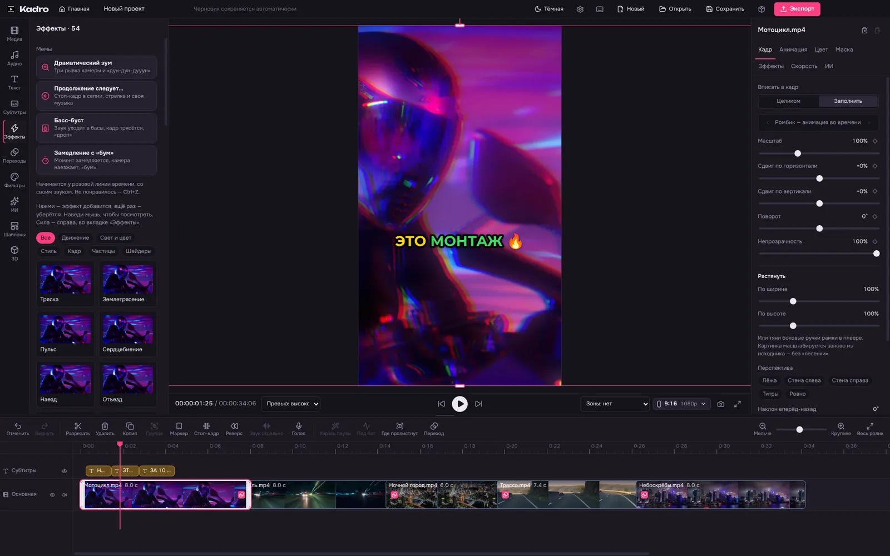
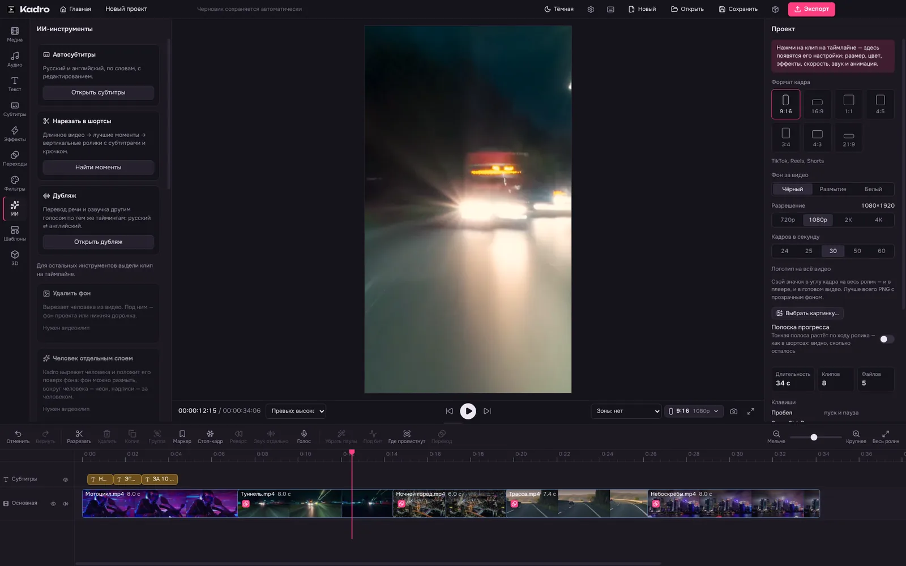
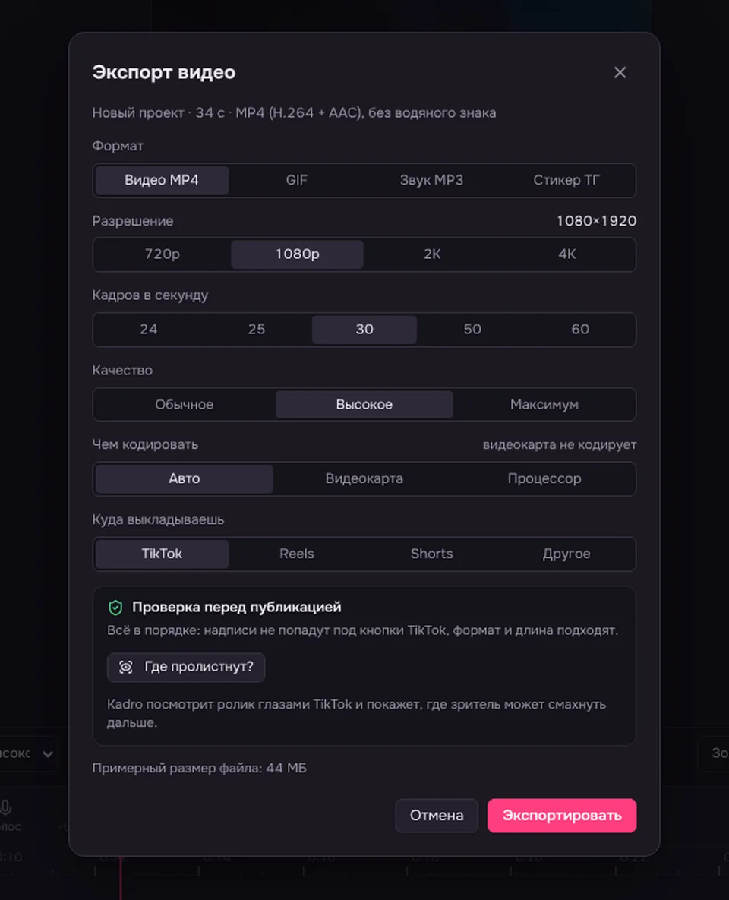

Kadro бесплатный видеоредактор для Windows
Монтаж для TikTok, Reels и Shorts с ИИ, который работает прямо на твоём компьютере. Без подписки, без водяного знака, без регистрации.
Установщик около 340 МБ, Windows 10 и 11.
Всё, что нужно для коротких роликов
Kadro — обычная программа, а не сайт. Видео не загружаются ни на какие серверы: монтаж, экспорт и ИИ работают на процессоре и видеокарте твоего компьютера.

Субтитры как у блогеров
Kadro сам распознаёт речь: русский, английский и ещё 23 языка. Субтитры встают по словам, ключевые слова и числа выделяются цветом, к смыслу подбираются эмодзи.
- стили «Хормози», «MrBeast», «По слову», «Плашка», «Неон», «Караоке»
- готовые .srt и .vtt тоже можно загрузить
- перевод субтитров на другой язык

181 переход, 54 эффекта, 47 фильтров
Переходы оживают под курсором, эффекты настраиваются ползунком. Мем-кнопки в один щелчок: драматический зум, «Продолжение следует…», басс-буст, замедление с «бум», у каждой свой звук.
- ключевые кадры, маски, хромакей
- текст с анимацией, стикеры, 3D-объекты
- 19 шаблонов с живым превью

ИИ без облака и кредитов
Всё считается на твоём компьютере, бесплатно и без лимитов.
- удаление фона и «Клон себя»: ты дважды в кадре
- нарезка стрима или подкаста в вертикальные шортсы
- дубляж с переводом: русский и английский
- студийный голос одной кнопкой
- «Где пролистнут»: Kadro покажет, где зритель уйдёт

Экспорт до 4K без водяного знака
MP4 в 720p, 1080p, 2K и 4K, от 24 до 60 кадров в секунду. Ещё GIF, звук MP3 и видеостикер для Telegram. Видеокарты NVIDIA, AMD и Intel ускоряют экспорт.
И ещё
- Авто-ролик: выбрал видео и музыку, Kadro смонтировал в ритм
- Повтор монтажа по ролику, как шаблоны CapCut
- Ролик по сценарию с озвучкой шестью голосами
- Видео на 4 точках и текст в перспективе
- Форматы 9:16, 16:9, 1:1, 4:5 и другие
- Музыка тише под голос автоматически
- Бумеранг, стоп-кадр, реверс, кривая скорости
- Цвет как у другого клипа в один щелчок
- Плагины-шейдеры и своё оформление
- Светлая и тёмная тема
- Автообновление в один щелчок
- «Первый ролик за 3 шага» для новичков
Kadro, CapCut и Premiere Pro
| Что сравниваем | Kadro | CapCut | Premiere Pro |
|---|---|---|---|
| Цена | Бесплатно, навсегда | Базовый монтаж бесплатно, Pro — по подписке | От $22.99 в месяц |
| ИИ-функции | Бесплатно, на твоём компьютере | Тратят кредиты | Только с подпиской |
| Оплата из России | Не нужна | Российские карты не принимаются | Adobe прекратила продажи в России в 2022 году |
| Регистрация | Не нужна | Нужен аккаунт для Pro | Нужен аккаунт Adobe |
| Исходный код | Открытый, GPL-3.0 | Закрытый | Закрытый |
Данные о конкурентах на ноябрь 2026: DTF о CapCut в России, цены Premiere Pro.
Скачать Kadro
- Скачай установщик. Браузер может спросить, сохранить ли редкий файл, — выбери «Сохранить».
- Запусти его. Если Windows покажет «Система Windows защитила ваш компьютер», нажми «Подробнее» → «Выполнить в любом случае». Так бывает с программами без платной подписи.
- Открой Kadro с ярлыка на рабочем столе. Права администратора не нужны, дальше программа обновляется сама.
Нужны Windows 10 или 11 (64-бит), 8 ГБ памяти (для 4K и удаления фона лучше 16 ГБ) и около 1 ГБ на диске. Видеокарта не обязательна. Есть версия без установки — zip на странице релиза.
Частые вопросы
Kadro правда бесплатный?
Да. Без подписки, пробного периода, водяного знака и регистрации. Код открыт под лицензией GPL-3.0 — его может проверить кто угодно.
Kadro — это аналог CapCut?
Kadro сделан по мотивам CapCut Pro: таймлайн, переходы, эффекты, субтитры как у блогеров, шаблоны, нарезка длинного видео в шортсы. Отличие в том, что всё бесплатно и работает на компьютере, без аккаунта и кредитов.
Нужен ли Kadro интернет?
Нет. Монтаж, экспорт и ИИ работают на компьютере, видео никуда не загружаются. Интернет нужен один раз — скачать модель распознавания речи или голос для озвучки, когда впервые ими пользуешься.
Как сделать субтитры автоматически бесплатно?
Открой вкладку «Субтитры» → «Автосубтитры». Kadro распознаёт речь прямо на компьютере (русский, английский и ещё 23 языка) и расставляет субтитры по словам. Стиль можно выбрать как у блогеров: «Хормози», «MrBeast», «По слову», «Неон», «Караоке».
Можно ли экспортировать видео в 4K без водяного знака?
Да. Kadro сохраняет MP4 до 4K без водяного знака, а также GIF, звук MP3 и видеостикер для Telegram.
Какие системные требования?
Windows 10 или 11 (64-бит), 8 ГБ оперативной памяти (для 4K и удаления фона лучше 16 ГБ), около 1 ГБ на диске. Видеокарта не обязательна, но NVIDIA, AMD и Intel ускоряют экспорт.
Windows пишет «Система Windows защитила ваш компьютер». Это вирус?
Нет. Так Windows реагирует на программы без платной цифровой подписи. Нажми «Подробнее» → «Выполнить в любом случае». Код Kadro открыт на GitHub, а установщик собирается автоматически на серверах GitHub.
Есть ли Kadro для Mac, Android или iPhone?
Пока только для Windows 10 и 11.